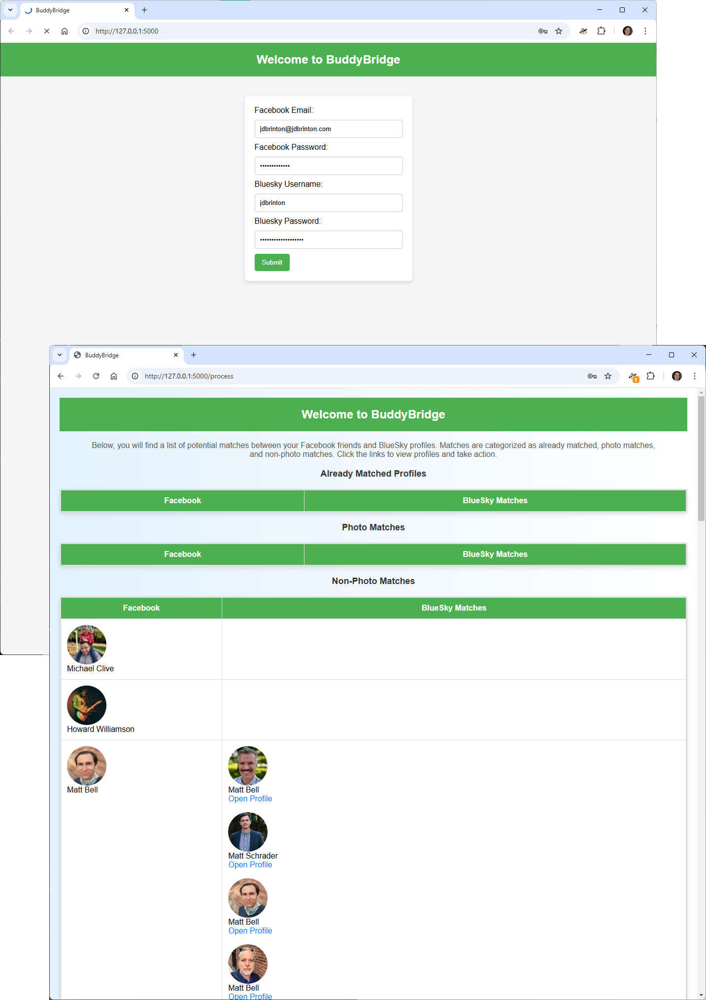

Getting Started
BuddyBridge is a Python webserver that helps you find Facebook friends on BlueSky using Selenium and ChromeDriver. Follow the steps below to install and run the application locally for security reasons.
Note, the app is a little slow at the moment. I'm working on improving the performance. It takes about a minute to get your Facebook friends, and then it takes about 5 seconds per friend to search Bluesky. I think there are ways to speed this up, but that is future work. This is a work in progress.
Installation Guide
- Clone the repository to your local machine:
- Install the required Python packages:
- Download ChromeDriver from here and ensure it's in your system's PATH.
git clone https://github.com/jdbrinton/buddybridge.git && cd buddybridgepip install -r requirements.txtUsage
- Run the script using the command:
- Follow the on-screen instructions to find your Facebook friends on BlueSky.
python buddybridge.pyGitHub Repository
For more details, visit the BuddyBridge GitHub repository: https://github.com/jdbrinton/buddybridge
License
This project is licensed under the MIT License.
